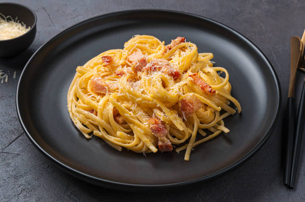

Fettuccine Carbonara

Fettuccine Carbonara is a classic Italian pasta dish known for its creamy sauce and flavorful ingredients. This indulgent recipe combines perfectly cooked fettuccine noodles with a rich sauce made from eggs, Parmesan cheese, pancetta or bacon, and black pepper.
Ingredients:
- 8 ounces (225 grams) fettuccine pasta
- 4 ounces (113 grams) pancetta or bacon, diced into small pieces
- 3 large eggs
- 1 cup (100 grams) grated Parmesan cheese
- 1 teaspoon freshly ground black pepper
- Salt to taste (optional)
- Chopped fresh parsley for garnish (optional)
Directions:
- Bring a large pot of salted water to a boil. Add the fettuccine pasta and cook according to the package instructions until al dente. Drain the cooked pasta, reserving some of the pasta water.
- While the pasta is cooking, heat a large skillet over medium heat. Add the diced pancetta or bacon and cook until crispy and browned. Remove the cooked pancetta from the skillet and set it aside on a paper towel-lined plate to drain excess grease.
- In a mixing bowl, whisk together the eggs, grated Parmesan cheese, and freshly ground black pepper until well combined.
- Reduce the heat to low and return the cooked pasta to the skillet with the pancetta. Pour the egg mixture over the pasta, tossing quickly and continuously to coat the pasta evenly. The heat from the pasta will gently cook the eggs, creating a creamy sauce. If the mixture seems too thick, you can gradually add a small amount of the reserved pasta water to loosen it.
- Once the pasta is well coated with the sauce and heated through, remove the skillet from the heat. Be careful not to overcook the sauce, as the eggs may scramble.
- Taste the fettuccine carbonara and season with salt if desired. Remember that the pancetta or bacon already adds saltiness, so be cautious while adding salt.
- Serve the fettuccine carbonara immediately, garnished with chopped fresh parsley if desired. Enjoy the creamy and flavorful pasta while it's still hot.